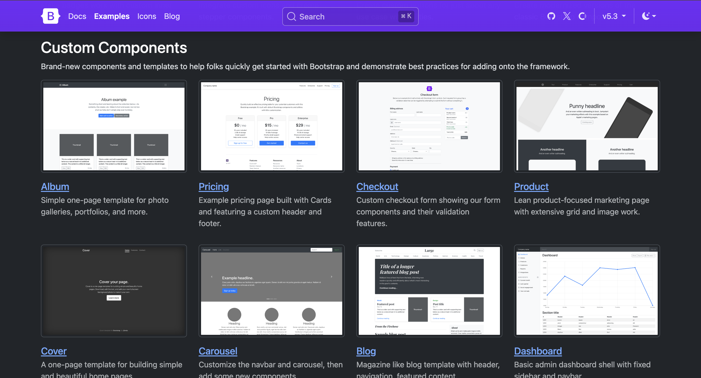

Bootstrap No Node.js
Bootstrap is kind of a classic. It was one of the first things I heard about when I started learning web design, and even though there are newer tools now, it is still useful. I like how it helps you build layouts quickly without getting too complicated. The grid system is intuitive, and the pre-built components like buttons, modals, and navbars make things really fast to set up. It is especially helpful for students or anyone who wants to get something functional online in just a few hours.
That said, a lot of websites made with Bootstrap tend to look pretty similar, especially when people stick to the default themes. For me, it is a good option for small or practical projects, like a university assignment or a client portfolio that needs to be finished fast. But for something more creative or visually unique, I would rather use tools that give me more freedom over the design. Still, I appreciate how stable and well documented Bootstrap is. It is a great safety net when you need to build something that just works.
